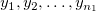
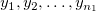
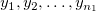

/math-8d88a43872d6db6535d8672a15f09ce2.png "n_1\,\!") および
および /math-ede03c8aef1b07c898c7747b489fd765.png "n_2\,\!") であると考えます。サンプルデータはそれぞれ
であると考えます。サンプルデータはそれぞれ /math-d79752c45b6e0288c460390908ff4157.png "x_1,x_2,\ldots ,x_{n_1}\,\!") および  と表します。
および  と表します。2つの独立した標本とについて、サンプルサイズが および であると考えます。サンプルデータはそれぞれ および  と表します。
帰無仮説 :と表し、2つの分布は同じです。これは対立仮説/math-7cd11b458088b7785f332b5101ecd466.png "H_1\,") に対して検定が実行されます。内容としては、
に対して検定が実行されます。内容としては、
/math-6b206a28e60f665e235f89f460448467.png "x\,") の傾向が
の傾向が/math-ec9ff0a12771e750c2685d3b89a37c79.png "y\,") よりも大きくなる場合、;またはの傾向がよりも小さくなる場合、
よりも大きくなる場合、;またはの傾向がよりも小さくなる場合、検定手順は以下のステップのようになります。
/math-312ce869e8967ee6fff1453ef5e28c4c.png "x_i \,\!") と
と /math-015fcddf5978e5b63ac9135bd7bdae23.png "y_i\,\!") を1つのグループに組み合わせます。に割り当てられる順位( において)と、 に割り当てられる順位( において)とします。
を1つのグループに組み合わせます。に割り当てられる順位( において)と、 に割り当てられる順位( において)とします。/math-6f3d5ad4b0e22c80e2db450cf7238ea9.png "U\,") は次のように表すことができます。
は次のように表すことができます。
/math-77698ae92ac0435f8da1e266eeb528e3.png "z\,") は次のように計算されます。
は次のように計算されます。
/math-28ce0d26a8607fa489594ca9a1d7cc31.png "M(U)=\frac{n_1n_2}2 \,")
は、標本内で同順位の数で、 は、j 番目のグループの同順位数です。
同順位が存在しない場合、 /math-d48c86a2e46b00c5cd98ca6169fed589.png "U \,") の分散はのようになります。
の分散はのようになります。
このアルゴリズムの詳細は、nag_mann_whitney (g08amc)をご覧下さい。